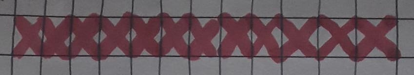

Donec posuere augue in quam. Etiam vel tortor sodales tellus ultricies commodo. Suspendisse potenti. Aenean in sem ac leo mollis blandit. Donec neque quam, dignissim in, mollis nec, sagittis eu, wisi. Phasellus lacus. Etiam laoreet quam sed arcu.  Phasellus at dui in ligula mollis ultricies. Integer placerat tristique nisl. Praesent augue. Fusce commodo. Pellentesque dapibus suscipit ligula. Vestibulum convallis, lorem a tempus semper, euismod elit Nullam libero mauris, consequat quis, varius et, dictum id, arcu. Mauris mollis tincidunt felis. Aliquam feugiat tellus ut neque. Nulla facilisis, risus a rhoncus fermentum, tellus tellus lacinia purus, et dictum nunc justo sit amet elit. dui dui
Is this a paragraph or a list item? 1
Is this a paragraph or a list item? 2
Is this a paragraph or a list item? 3